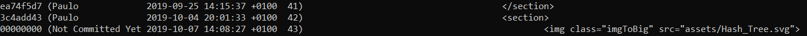
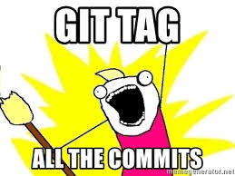

GIT 101
Characteristic
Strong support for non-linear development
Distributed development

Concept of History
WORKING DIRECTORY
- The local folder where the files are located.
- Files - Untracked / Tracked (Staged, Commited , Modified)
- Where HEAD is pointing

STAGING AREA
- Preparation stage.
- The files that are on the stage are the ones that go into the commit.
- Each commit moves the HEAD pointer a step on the local repo
REMOTE
- The place where the code is stored
- URL can be a repo, a repo from a fork or another server
- Remote URL represented by a name ( default : ORIGIN )
HEAD
- Locally only one HEAD - Where we are currently working
- Every remote branch has its own HEAD - latest change
- DETACHED HEAD states. No branch association


COMMANDS

git add "file(s)"
# add all files that are on the root of the current directory
git add .
# add all files
git add -a
# you can use regex to add specific files

git commit
# create a commit with all modified and updated files from the repo
git commit -a
# add a message to the commit
git commit -m "message"
git push
git push -f THIS DELETES HISTORY OF THE REPOSITORY


git pull
git pull = git fetch origin + git merge
# changes your repo automatically when you run this command
git fetch

git blame "file"
-l ( long revision )
Debug - An easy way to find who wrote the code or which commit is associated with that logic

git config
# configuring a user.name
git config --global | --local | --repo user.name "Name"
# getting the list of configurations
git config --list
# creating a git alias
git config --global alias.up "!git remote update; git merge --ff-only @{u}"

git stash

git remote
git merge

git checkout
git tag

git branchbranch
-d
-D

git diff
git diff --cached
git diff HEAD~3
git diff (commitHASH)

git reset
# staged to unstaged
git reset
NOTE: Unstaged Changes will dissapear
# staged/unstaged to latest existing commit
git reset --hard
# staged/unstaged to specific commit hash
git reset 'hashCode'

git status
git status --short | --long ( default )

git log
# check for the just a specific type of commits
git log --no-merges | --merges
# check for commit related to a user
git log --author="(author)"
Shows the story of the local branch repository


git show
git apply
git cherry-pick "commit"

git rebase -i
git revert